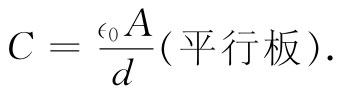

现在，我们提出另一类与导体有关的问题。考虑两块大的金属板，彼此互相平行并相隔一个比它们的宽度小得多的距离。而且，假定它们分别带有等量异号电荷。这样，每一板上的电荷将被另一板上的电荷所吸引，而这些电荷都将均匀地散布于板内侧表面上。两板将分别具有电荷密度+σ和-σ，如图6-12所示。从第5章我们知道：两板之间的场为σ/∈0 ，而在两板外面的场则为零。两板将有不同的势ϕ1 和ϕ2 。为了方便起见，我们将称这差为V，它常叫作“电压”
ϕ1 -ϕ2 =V.
你将发现，有时人们把V当作电势用，但我们却选用ϕ作为电势。
图6-12 平行板电容器
势差V是单位电荷从一板移至另一板所需的功，因而
式中±Q为每板上的总电荷，A为板的面积，而d为两板间距。
我们发现电压与电荷成正比。对于在空间中的任何两个导体，只要一个带正电而另一个带等量负电，V与Q之间的这种正比性都能找到。它们间的势差——也就是电压——将与电荷成正比（我们假定在其周围没有其他电荷）。
为什么会有这一种正比性呢？这只不过是叠加原理在起作用。假定我们已知道关于一组电荷的解，然后把两个这样的解叠加起来。电荷加倍，场也加倍，因此，将单位电荷从一点移至另一点所做的功也加倍。因此，在任何两点之间的势差就正比于电荷。特别是，两导体之间的势差正比于它们上面的电荷。当初有人把这个正比的式子写成了另一种形式。也就是说，他们写成
Q=CV，
式中C是一常数。这个比例常数叫做电容 ，而这样一种两个导体的系统则叫作电容器 [1] 。对于我们的平行板电容器来说，
 （6.34）
这个公式并非严格准确，因为在两板之间场并不像我们设想的那样真正处处均匀。在边缘处场并非刚好突然消失，而实际上更像图6-13所示的那种情形。总电荷不像我们所假定的为σΑ——对于边缘效应有一个小的修正。为了求得这个修正，我们得更准确地算出场并找出在边缘处究竟发生了什么。然而，这是一个复杂的数学问题，它可以用技巧解决，我们现在就不加以描述了。这种计算的结果表明，接近两极板边缘处电荷密度会比中间稍微高些。（这意味着平板电容器的电容比我们计算的稍大。）
图6-13 在两平行板边缘附近的电场
我们仅仅谈及了关于两导体的电容。有时人们会谈到单个物体的电容。例如，他们会说，一个半径为a的球体有4π∈0 a的电容。他们把另一端设想为是一个半径无限大的球——即当有一电荷+Q放在球面上时，相反的电荷-Q则在一个无限大的球面上。人们也可以谈论当有三个或更多个导体时的电容，然而关于这方面的讨论我们将要推迟。
假设我们希望有一个电容很大的电容器，那就可以通过取极大面积但间距极小而获得。我们可以将浸过蜡的纸片夹在铝质薄膜之间而卷起来（如果把它密封在一个塑料盒中，那就会形成一个典型的无线电方面用的电容器了）。它有什么好处呢？好处在于能贮存电荷。比如，若我们试图把电荷贮存在一个球上，则当它充电时电势会很快升高，甚至可能高到电荷开始通过火花逃逸到空气中去。可是，若我们把等量电荷放在一个电容十分大的电容器上，则电容器间所形成的电压会很小。
在电子线路的许多种应用中，凡能吸收或释放大量电荷而又不大会怎样改变其电势的东西都是有用的，而这就是电容器。在电子仪器以及计算机中，电容器还有许多种应用。其中，有的被用来随着电荷的某一特定变化，从而相应地得到电压的一种特殊变化。在第1卷第23章中我们曾在描述共振电路特性的地方见到一种相似应用。
我们从C的定义可以看出，它的单位是CV-1 。这个单位也叫法 （F）。考察式（6.34），我们见到∈0 的单位可表达为Fm-1 ，这是最常用的单位。电容器的典型容量约在1pF至1mF之间。几皮法的那种小电容器常用于高频调谐电路中，而高达成百上千个微法的电容器则在能源滤波器中可以找到。面积为1dm2 而间距为1mm的一对平行板约有1pF的电容。